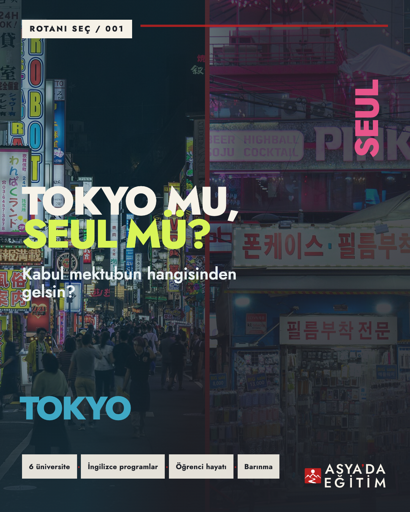
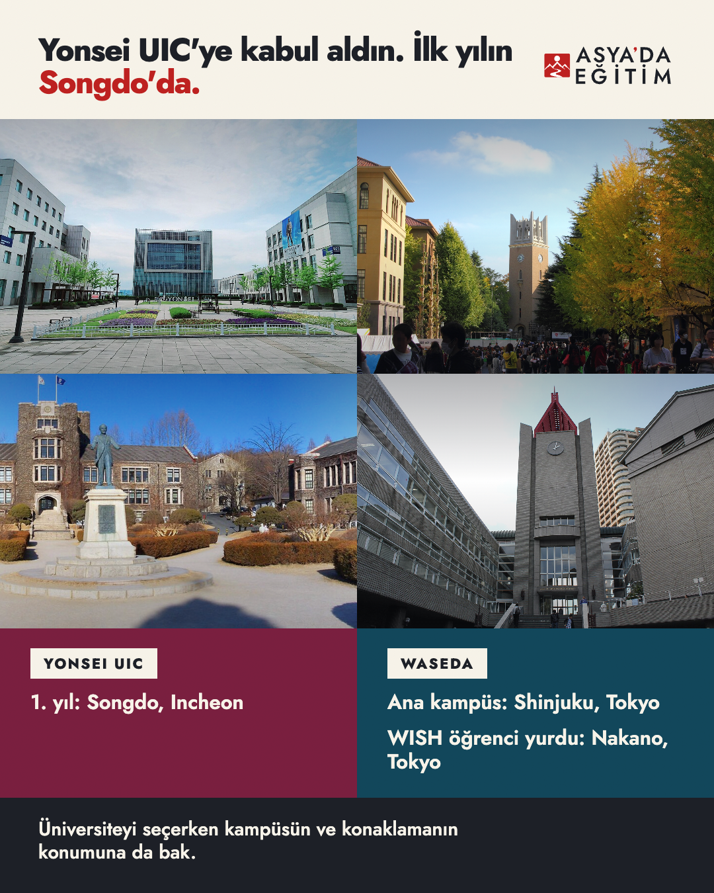
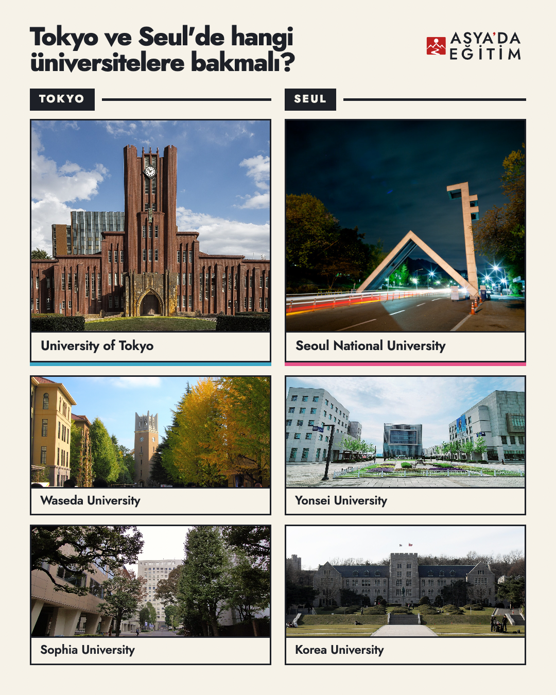
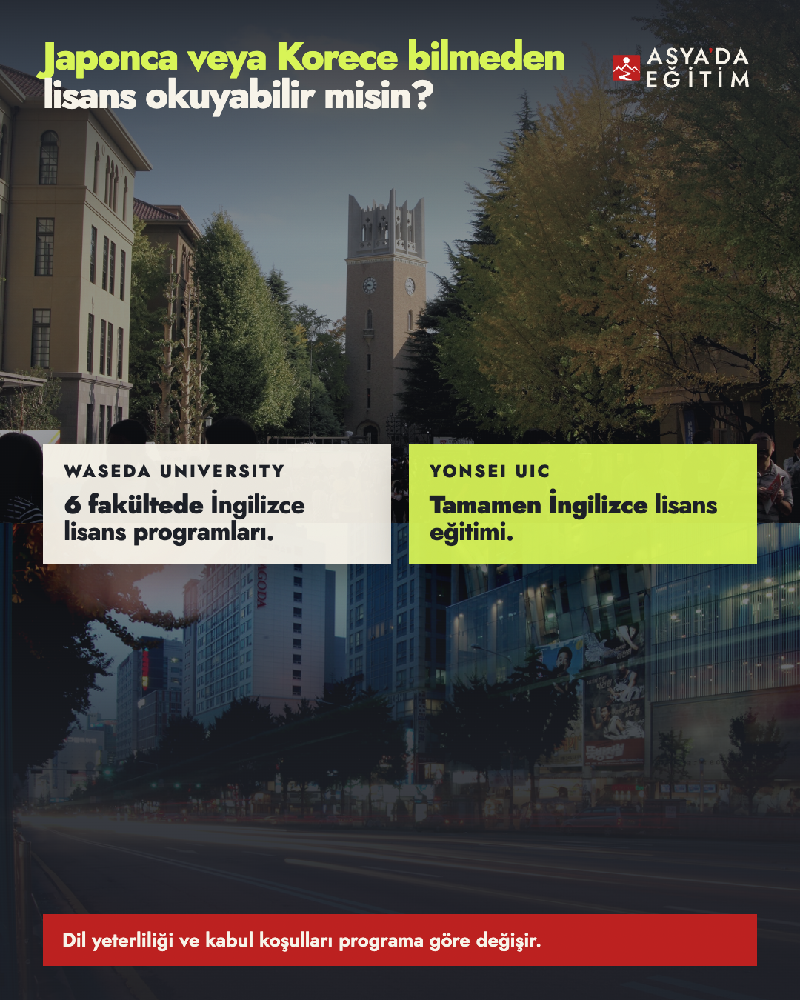
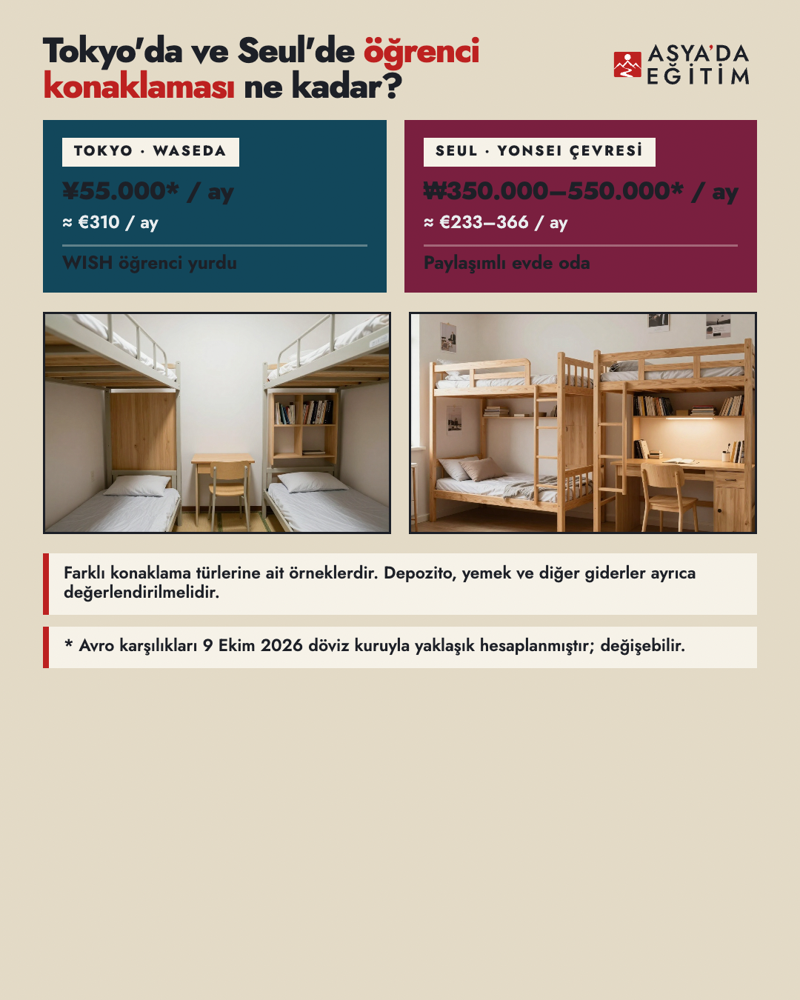

Asya'da Eğitim · Rotanı Seç / 001 · V3 revizyonu
Tokyo mu, Seul mü?
Altı slaytın tamamı, alt alta. Bu turda 01, 02 ve 05 yeniden çözüldü; 03, 04 ve 06 onaylandığı gibi bırakıldı.
İnsan incelemesi bekliyor. Kanonik kimlik değiştirilmedi. Kampanya sosyal medyada yayımlanmadı.

01Kabul mektubu
Beyaz kutuların içindeki yazılar artık gerçekten ortalanmış; kırmızı şerit kutuların arkasından geçiyor.
dikey ortalama düzeltildişerit arkaya alındı

02Kampüs coğrafyası
Her şehir kendi fotoğraflarının üstünde kendi rozeti ve bilgileriyle anlatılıyor; hangisinin neresi olduğu artık tahmin edilmiyor.
eşleşme netleştirildikırpma bozulması giderildi

03Altı üniversite
Bu turda değişmedi.

04İngilizce lisans
Bu turda değişmedi; önceki turda onaylandı.

05Konaklama
Alt boşluk kapandı: fotoğraflar esner, notlar tabana oturur. Koyu kartlardaki yazılar da okunur hale getirildi.
330px boşluk kapandıkontrast 1.6:1 → 8.6:1